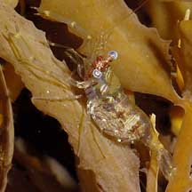
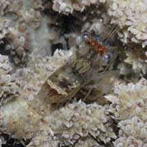
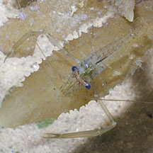
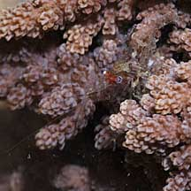
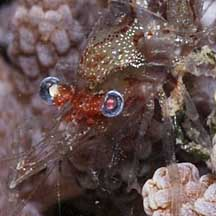
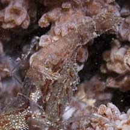
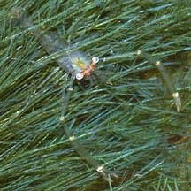
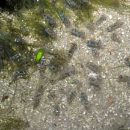
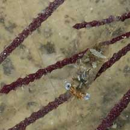
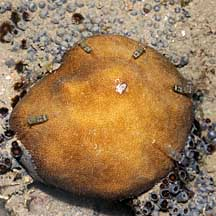

|
|
| shrimps text index | photo index |
| Phylum Arthropoda
> Subphylum Crustacea > Class
Malacostraca > Order Decapoda
> prawns and shrimps > Family Palaemonidae |
| Little
red-nosed shrimp Periclimenes sp.* Family Paleomonidae updated Jan 2020 Where seen? This fat little shrimp with a red bar on the face is commonly seen on many of our shores. Groups of many individuals on the bottom of shallow sandy or silty pools left behind at low tide, or in small groups among other living animals. They are more active at night. Features: About 1cm long. The tiny shrimp is rather 'fat' and not as slender as other shrimps. The large blue eyes are rather far apart. The female has a brownish or greenish body, with a white bar and white spots, and often, a red patch between the eyes. The male is transparent with a pair of long pincers, often longer than his body. The female's pincers is long but not as long as the male's. These little shrimps are often found clinging to all kinds of other larger animals such as hard corals, sea fans, leathery soft corals, flowery soft corals. As well as seaweeds, or just gathered in a sandy pool. |
 Sentosa, Aug 04 |
 Female with pincers which are not so long and body with white markings. Tuas, Nov 03 |
 Male with very long pincers and transparent body. St. John's Island, Oct 11 |
 Kusu Island, Aug 08 |
 |
 |
 Among seaweeds. Sentosa, Oct 03 |
 On sand. St. John's Island, Jan 06 |
 On sea fan. East Coast, Jun 06 |
 On hard coral. Kusu Island, Aug 08 |
 On hard coral. St. John's Island, May 06 |
Among soft corals. Tuas, Nov 03 |
*Species are difficult to positively identify without close examination.
On this website, they are grouped by external features for convenience of display.
| Little red-nosed shrimps on Singapore shores |
On wildsingapore
flickr
|
| Other sightings on Singapore shores |
References
|